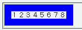
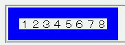

position: absolute; を指定して絶対配置にしたボックスには-moz-box-sizingプロパティ（Mozilla独自拡張、CSS3のbox-sizingに相当）の指定が無視され、常にCSS2でのルールに基づいた幅や高さの算出が行われる。
<style type="text/css">
div.a {
position: absolute;
-moz-box-sizing: border-box;
width: 10em;
border: 1em solid blue;
font-family: monospace;
}
</style>
<div class="a">１２３４５６７８</div>
ボーダーが左右で2文字分なので、内容領域は8文字分の幅になります。
Moz1.0での表示（標準モード）
N6.2.3での表示（標準モード）
Moz1.0及びN6.2.3では正しく幅算出が行われます。
【CSS】 Netscape6
position:absolute を指定した要素では
-moz-box-sizing:border-box の指定が無効になります。